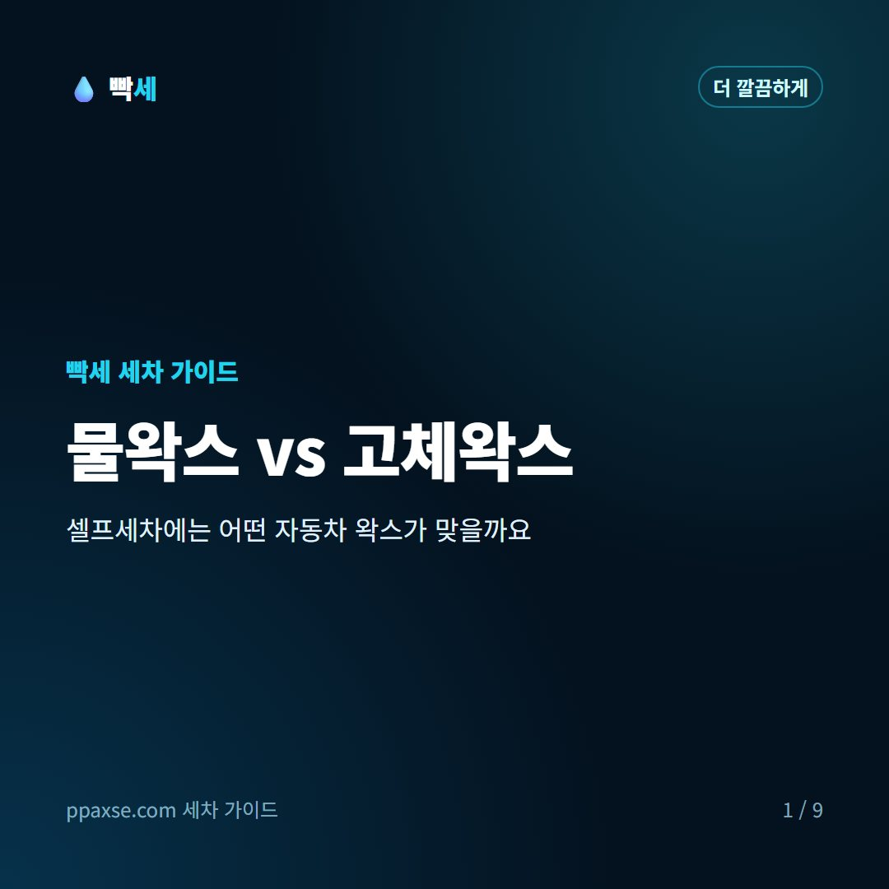
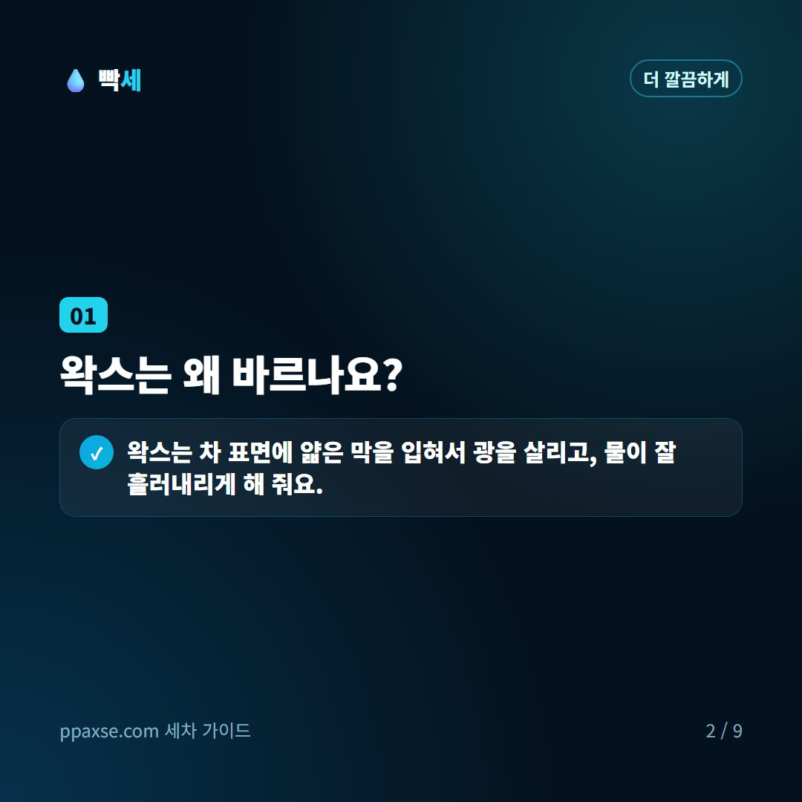
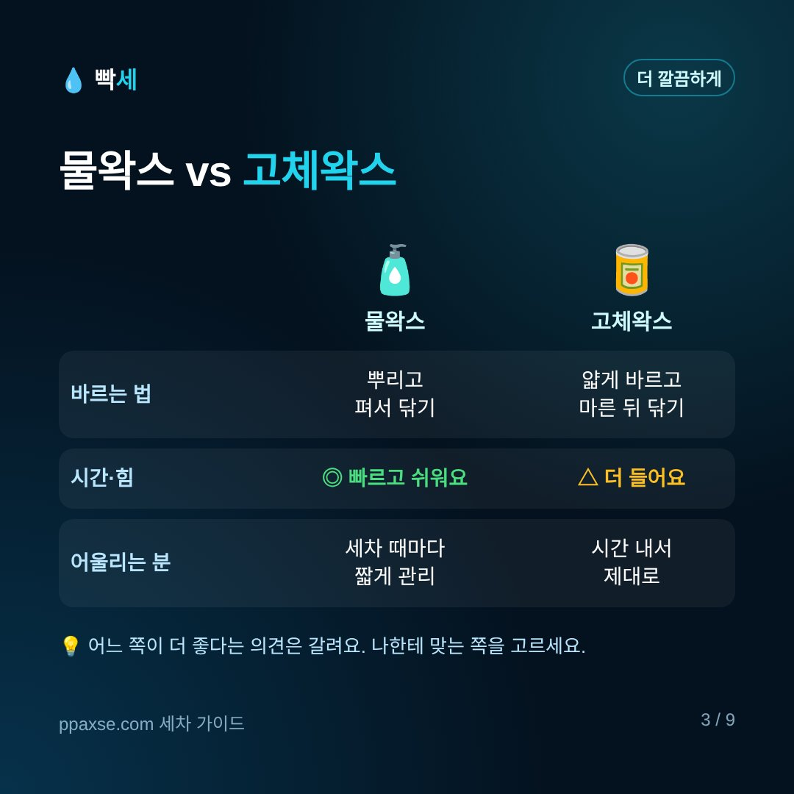
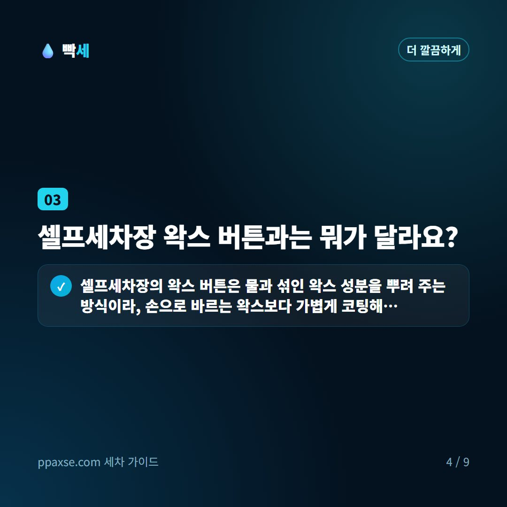
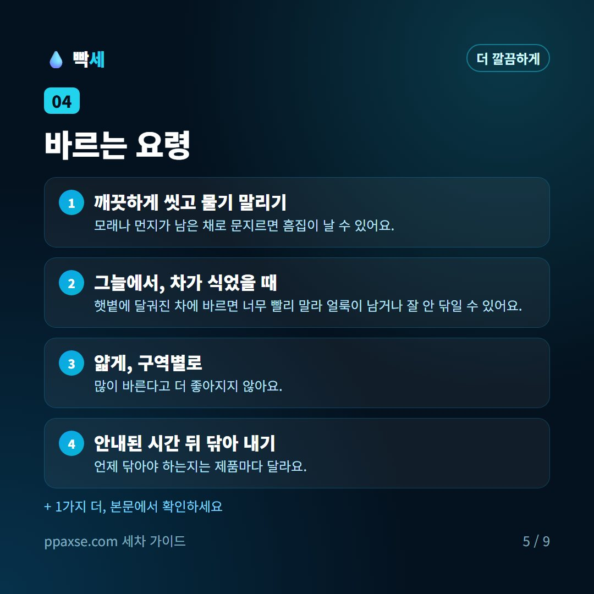
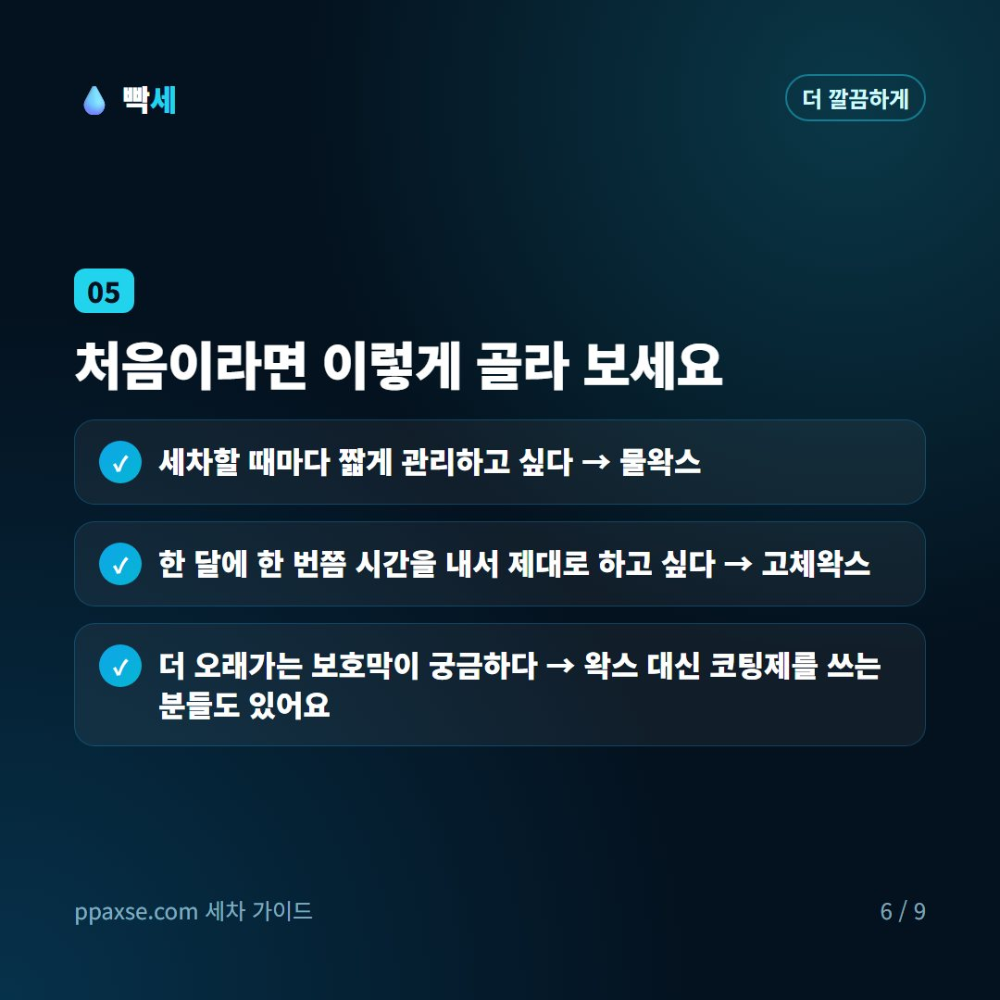

물왁스 vs 고체왁스 — 셀프세차에는 어떤 자동차 왁스가 맞을까요
자동차 왁스를 사려고 보면 물왁스와 고체왁스가 가장 먼저 보여요. 결론부터 말하면 자주, 빠르게 하고 싶다면 물왁스, 시간을 들여 한 번에 제대로 하고 싶다면 고체왁스를 고르는 분들이 많아요. 이 글에서는 둘의 차이와 셀프세차장에서 쓰는 요령을 정리했어요.

왁스는 왜 바르나요?

왁스는 차 표면에 얇은 막을 입혀서 광을 살리고, 물이 잘 흘러내리게 해 줘요. 먼지나 오염이 덜 달라붙어 다음 세차가 편해지는 것도 많이 꼽는 장점이에요. 다만 왁스 막은 시간이 지나면 조금씩 벗겨져서, 주기적으로 다시 발라 주는 게 보통이에요.
물왁스와 고체왁스, 뭐가 다른가요?

- 물왁스 — 액체나 스프레이 형태예요. 뿌리고 타월로 펴서 닦으면 끝이라 빠르고 쉬워요. 세차 끝에 물기 닦으면서 함께 쓰는 제품도 있어요. 대신 막이 얇아서 오래가지 않는다고 느끼는 분들이 많아요.
- 고체왁스 — 통에 든 굳은 형태예요. 스펀지(어플리케이터)에 묻혀 얇게 바르고, 잠시 마른 뒤 타월로 닦아 내요. 시간과 힘이 더 들지만 광이 깊고 오래간다고 말하는 분들이 많아요.
셀프세차장 왁스 버튼과는 뭐가 달라요?

셀프세차장의 왁스 버튼은 물과 섞인 왁스 성분을 뿌려 주는 방식이라, 손으로 바르는 왁스보다 가볍게 코팅해 주는 정도로 보는 분들이 많아요. 버튼마다 하는 일이 궁금하다면 셀프세차장 버튼 사용법을 먼저 보세요.
바르는 요령

- 깨끗하게 씻고 물기 말리기 — 모래나 먼지가 남은 채로 문지르면 흠집이 날 수 있어요. 손끝에 오돌토돌한 게 남는다면 철분 제거·타르 제거를 먼저 하는 분들도 있어요.
- 그늘에서, 차가 식었을 때 — 햇볕에 달궈진 차에 바르면 너무 빨리 말라 얼룩이 남거나 잘 안 닦일 수 있어요.
- 얇게, 구역별로 — 많이 바른다고 더 좋아지지 않아요. 보닛, 문 한 짝처럼 구역을 나눠 얇게 펴 발라요.
- 안내된 시간 뒤 닦아 내기 — 언제 닦아야 하는지는 제품마다 달라요. 설명서를 따라 깨끗한 타월로 닦아 주세요.
- 고무·무광 부분은 피하기 — 검은 플라스틱이나 고무 몰딩에 묻으면 하얗게 남을 수 있어요. 무광 도장 차량은 일반 왁스를 피하라는 안내가 많으니 무광 도장 차량 세차 방법을 참고하세요.
처음이라면 이렇게 골라 보세요

- 세차할 때마다 짧게 관리하고 싶다 → 물왁스
- 한 달에 한 번쯤 시간을 내서 제대로 하고 싶다 → 고체왁스
- 더 오래가는 보호막이 궁금하다 → 왁스 대신 코팅제를 쓰는 분들도 있어요
왁스를 바른 뒤 남은 얼룩이 고민이라면 세차 후 물자국(워터스팟) 줄이는 법도 함께 보세요.
내 주변 셀프세차장 찾기
왁스를 손으로 바르려면 그늘진 드라잉 존이 있는 곳이 편해요. 빡세 지도에서는 셀프세차장의 시설 정보를 이용자들이 함께 채워가고 있어요. 지역별 목록은 지역별 세차장 모음에서 볼 수 있어요.
다녀온 곳에 그늘진 드라잉 존이 있었는지, 왁스 버튼이 어땠는지 한마디로 남겨 주시면 다음 사람이 세차장을 고를 때 큰 도움이 돼요.
셀프세차·노터치·손세차를 종류별로 골라 보고, 폼건·온수·하부세차 같은 시설 정보도 확인할 수 있어요.
🗺️ 세차장 지도 열기✏️ 자주 가는 세차장에 한마디 남기기🎁 한마디를 남기면 가입 없이도 매주 기프티콘 추첨에 응모돼요.